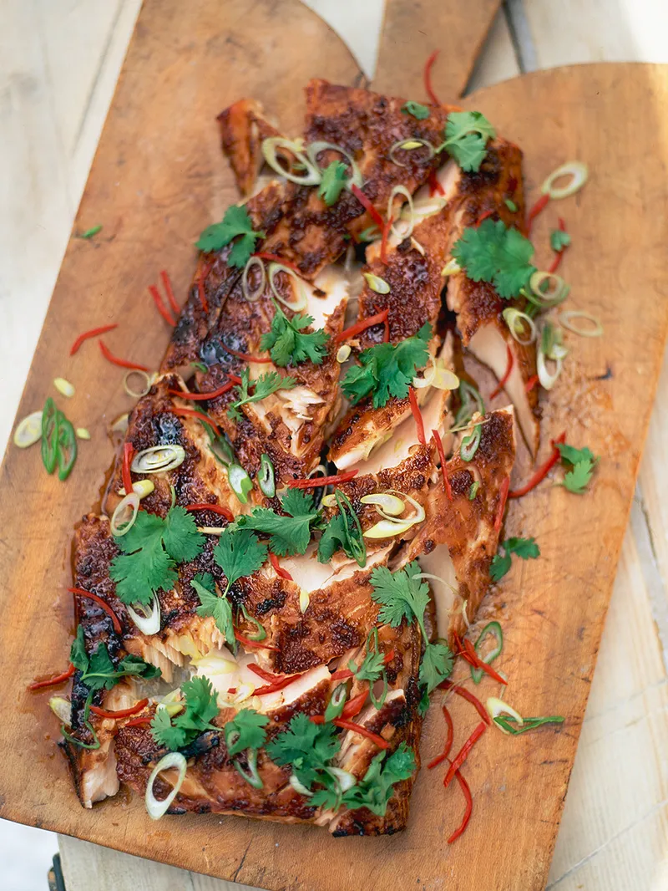

Marinated & grilled salmon

Description
Ingredients:
- 2 sticks of fresh lemongrass
- 1 bunch of fresh coriander , (30g)
- 5cm piece of fresh ginger
- 4 cloves of garlic
- ½ x small bottle of low-salt dark soy sauce
- 1 large salmon fillet , (about 1kg), ask your fishmonger, scaled and pin-boned, from sustainable sources.
- 4 tablespoons runny honey
- 2 red chillies
- 4 spring onions
- 2 limes
Steps
- Bash up your lemongrass. Pick the coriander leaves and finely slice the stalks. Peel and finely grate the ginger and garlic.
- Mix the lemongrass, coriander stalks, ginger and garlic with the soy sauce, then rub all over the salmon fillet. Leave it to marinate for an hour or so, either in a plastic bag or on a tray covered with clingfilm.
- Preheat your grill to its highest setting. When you’re ready to cook the salmon, remove it from the marinade, brush with the honey and grill for 10 minutes.
- Deseed the chillies and finely slice with the spring onions.
- Fork up the cooked salmon a little so everyone can see the lovely, dark, sticky outside and the juicy, pink fish underneath.
- Sprinkle the chillies and spring onions over the salmon with the reserved coriander leaves. Squeeze over the lime.